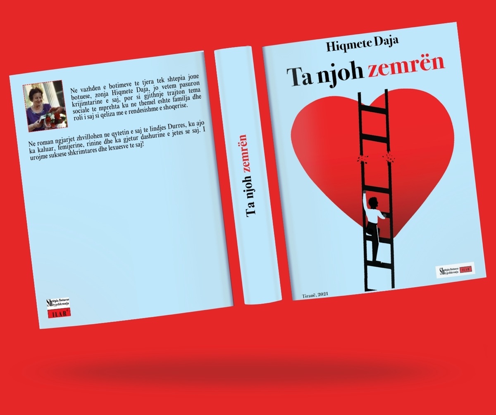

Anis Slimani
Inter-disciplinary Creative
Ta njoh Zemrën
For this project I designed the cover of Ta Njoh Zemrën in Adobe Illustrator. Working closely with the author, I explored the book’s themes and tone to build a visual concept that reflects its emotional depth.
The process included developing custom typography and illustrations, and selecting colour and composition for a clean, professional result optimised for print. The finished cover captures the essence of the book and its heartbreaking story.

Ta njoh Zemrën
For this project I designed the cover of Ta Njoh Zemrën in Adobe Illustrator. Working closely with the author, I explored the book’s themes and tone to build a visual concept that reflects its emotional depth.
The process included developing custom typography and illustrations, and selecting colour and composition for a clean, professional result optimised for print. The finished cover captures the essence of the book and its heartbreaking story.